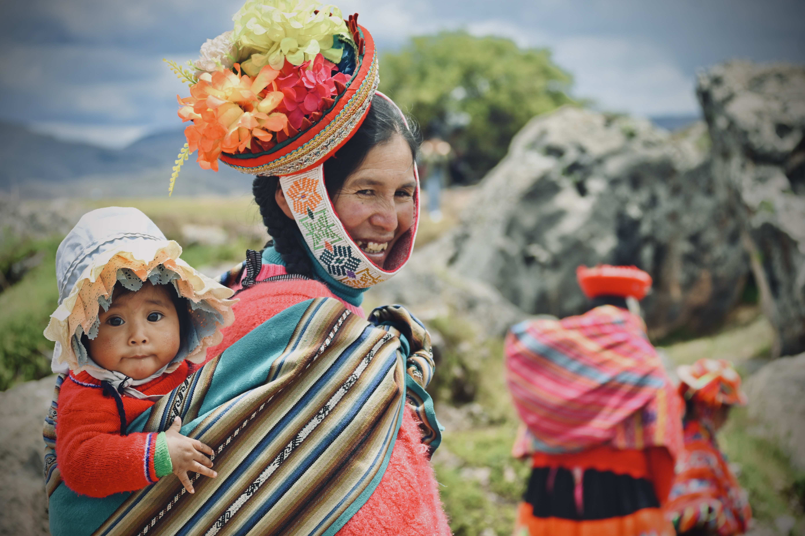

Rwanda · Primordial
Portrait-led frames balancing intimacy with distance in dense terrain, built around brief windows of natural light.

The work explores texture and presence over spectacle, emphasizing stillness and eye-line connection.